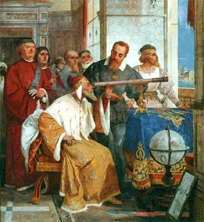

La revolución científica del Renacimiento tuvo su arranque en el heliocentrismo de Copérnico y su culminación, un siglo después, en la mecánica de Newton . Su más eximio representante, sin embargo, fue el científico italiano Galileo Galilei. En el campo de la física, Galileo formuló las primeras leyes sobre el movimiento; en el de la astronomía, confirmó la teoría copernicana con sus observaciones telescópicas. Pero ninguna de estas valiosas aportaciones tendría tan trascendentales consecuencias como la introducción de la metodología experimental, logro que le ha valido la consideración de padre de la ciencia moderna.
En 1581 Galileo ingresó en la
Universidad de Pisa, donde se matriculó como estudiante de medicina por voluntad
de su padre. Cuatro años más tarde, sin embargo, abandonó la universidad sin haber
obtenido ningún título, aunque con un buen conocimiento de Aristóteles . Entretanto, se había producido un hecho
determinante en su vida: su iniciación en las matemáticas (al margen de sus estudios
universitarios) y la consiguiente pérdida de interés por su carrera como médico.
De vuelta en Florencia en 1585, Galileo pasó unos años dedicado al estudio de las
matemáticas, aunque interesado también por la filosofía y la literatura, en la que
mostraba sus preferencias por Ariosto frente a Tasso ; de esa época data su primer trabajo sobre el baricentro
de los cuerpos (que luego recuperaría, en 1638, como apéndice de la que habría de ser su
obra científica principal) y la invención de una balanza hidrostática para la
determinación de pesos específicos, dos contribuciones situadas en la línea de Arquímedes
, a quien Galileo no dudaría en calificar de «sobrehumano»
Tras dar algunas clases particulares de matemáticas en Florencia y en Siena , trató de
obtener un empleo regular en las universidades de Bolonia, Padua y en la propia
Florencia. En 1589 consiguió por fin una plaza en el Estudio de Pisa, donde su
descontento por el paupérrimo sueldo percibido no pudo menos que ponerse de manifiesto
en un poema satírico contra la vestimenta académica. En Pisa compuso Galileo un texto
sobre el movimiento que mantuvo inédito, en el cual, dentro aún del marco de la mecánica
medieval, criticó las explicaciones aristotélicas de la caída de los cuerpos y del
movimiento de los proyectiles.
En continuidad con esa crítica, una cierta tradición historiográfica ha forjado la
anécdota (hoy generalmente considerada como inverosímil) de Galileo refutando
materialmente a Aristóteles mediante el procedimiento de lanzar distintos pesos desde lo
alto del Campanile de Pisa, ante las miradas contrariadas de los peripatéticos. Casi dos
mil años antes, Aristóteles había afirmado que los cuerpos más pesados caen más deprisa;
según esta leyenda, Galileo habría demostrado la falsedad de este concepto con el simple
procedimiento de dejar caer simultáneamente cuerpos de distinto peso desde lo alto de la
torre y constatar que todos llegaban al suelo al mismo tiempo.

En lugar de ello, Galileo partía de la observación de los hechos, sometiéndolos a condiciones controladas y mesurables en experimentos. Probablemente es falso que dejase caer pesos desde la torre de Pisa; pero es del todo cierto que construyó un plano inclinado de seis metros de largo (alisado para reducir la fricción) y un reloj de agua con el que midió la velocidad de descenso de las bolas. De la observación surgían hipótesis que habían de corroborarse en nuevos experimentos y formularse matemáticamente como leyes universalmente válidas, pues, según un célebre concepto suyo, «el Libro de la Naturaleza está escrito en lenguaje matemático» . Con este modo de proceder, hoy natural y en aquel tiempo nuevo y escandaloso (por cuestionar ideas universalmente admitidas y la autoridad de los sabios y doctores), Galileo inauguraba la revolución metodológica que le ha valido el título de «padre de la ciencia moderna» .
Fotografía de Recreacion de Plano Inclinado
De ser cierto, podría fecharse en el episodio de la torre de Pisa el nacimiento de la metodología científica moderna. Y es que, en tiempos de Galileo, la ciencia era fundamentalmente especulativa. Las ideas y teorías de los grandes sabios de la Antigüedad y de los padres de la Iglesia, así como cualquier concepto mencionado en las Sagradas Escrituras, eran venerados como verdades indudables e inmutables a las que podían añadirse poco más que glosas y comentarios, o abstractas especulaciones que no alteraban su sustancia. Aristóteles, por ejemplo, había distinguido entre movimientos naturales (las piedras caen al suelo porque es su lugar natural, y el humo, por ser caliente, asciende hacia el Sol) y violentos (como el de una flecha lanzada al cielo, que no es su lugar natural); los estudiosos de los tiempos de Galileo se dedicaban a razonar en torno a clasificaciones tan estériles como ésta, buscando un inútil refinamiento conceptual.En lugar de ello, Galileo partía de la observación de los hechos, sometiéndolos a condiciones controladas y mesurables en experimentos. Probablemente es falso que dejase caer pesos desde la torre de Pisa; pero es del todo cierto que construyó un plano inclinado de seis metros de largo (alisado para reducir la fricción) y un reloj de agua con el que midió la velocidad de descenso de las bolas. De la observación surgían hipótesis que habían de corroborarse en nuevos experimentos y formularse matemáticamente como leyes universalmente válidas, pues, según un célebre concepto suyo, «el Libro de la Naturaleza está escrito en lenguaje matemático» . Con este modo de proceder, hoy natural y en aquel tiempo nuevo y escandaloso (por cuestionar ideas universalmente admitidas y la autoridad de los sabios y doctores), Galileo inauguraba la revolución metodológica que le ha valido el título de «padre de la ciencia moderna» .
La muerte de su padre en 1591 significó para Galileo la obligación de responsabilizarse
de su familia y atender a la dote de su hermana Virginia. Comenzaron así una serie de
dificultades económicas que no harían más que agravarse en los años siguientes; en 1601
hubo de proveer a la dote de su hermana Livia sin la colaboración de su hermano
Michelangelo, quien había marchado a Polonia con dinero que Galileo le había prestado y
que nunca le devolvió (más tarde, Michelangelo se estableció en Alemania gracias de
nuevo a la ayuda de su hermano, y envió luego a vivir con él a toda su familia).
La necesidad de dinero en esa época se vio aumentada por el nacimiento de los tres hijos del propio Galileo: Virginia (1600), Livia (1601) y Vincenzo (1606), habidos de su unión con Marina Gamba, que duró de 1599 a 1610 y con quien no llegó a casarse. Todo ello hizo insuficiente la pequeña mejora conseguida por Galileo en su remuneración al ser elegido, en 1592, para la cátedra de matemáticas de la Universidad de Padua por las autoridades venecianas que la regentaban. Hubo de recurrir a las clases particulares, a los anticipos e incluso a los préstamos. Pese a todo, la estancia de Galileo en Padua, que se prolongó hasta 1610, constituyó el período más creativo, intenso y hasta feliz de su vida.
La necesidad de dinero en esa época se vio aumentada por el nacimiento de los tres hijos del propio Galileo: Virginia (1600), Livia (1601) y Vincenzo (1606), habidos de su unión con Marina Gamba, que duró de 1599 a 1610 y con quien no llegó a casarse. Todo ello hizo insuficiente la pequeña mejora conseguida por Galileo en su remuneración al ser elegido, en 1592, para la cátedra de matemáticas de la Universidad de Padua por las autoridades venecianas que la regentaban. Hubo de recurrir a las clases particulares, a los anticipos e incluso a los préstamos. Pese a todo, la estancia de Galileo en Padua, que se prolongó hasta 1610, constituyó el período más creativo, intenso y hasta feliz de su vida.
Retrato de Galileo Galilei por Domenico Tintoretto, c. 1606
En julio de 1609, de visita en Venecia (para solicitar un aumento de sueldo), Galileo
tuvo
noticia de un nuevo instrumento óptico que un holandés había presentado al príncipe
Mauricio
de Nassau; se trataba del anteojo, cuya importancia práctica captó Galileo
inmediatamente,
dedicando sus esfuerzos a mejorarlo hasta hacer de él un verdadero telescopio. Aunque
declaró haber conseguido perfeccionar el aparato merced a consideraciones teóricas sobre
los principios ópticos que eran su fundamento, lo más probable es que lo hiciera
mediante
sucesivas tentativas prácticas que, a lo sumo, se apoyaron en algunos razonamientos muy
sumarios.Sea como fuere, su mérito innegable residió en que fue el primero que acertó en
extraer del instrumento un provecho científico decisivo. Entre diciembre de 1609 y enero
de 1610, Galileo realizó con su telescopio las primeras observaciones de la Luna,
interpretando
lo que veía como prueba de la existencia en nuestro satélite de montañas y cráteres que
demostraban su comunidad de naturaleza con la Tierra; las tesis aristotélicas
tradicionales
acerca de la perfección del mundo celeste, que exigían la completa esfericidad de los
astros, quedaban puestas en entredicho.
El descubrimiento de cuatro satélites de Júpiter contradecía, por su parte, el principio
de
que la Tierra tuviera que ser el centro de todos los movimientos que se produjeran en el
cielo. A finales de 1610, Galileo observó que Venus presentaba fases semejantes a las
lunares, hecho que interpretó como una confirmación empírica al sistema heliocéntrico de
Copérnico, ya que éste, y no el geocéntrico de Tolomeo, estaba en condiciones de proporcionar una explicación
para
el fenómeno.
Ansioso de dar a conocer sus descubrimientos, Galileo redactó a toda prisa un breve
texto
que se publicó en marzo de 1610 y que no tardó en hacerle famoso en toda Europa: El
mensajero sideral. Su título original,Sidereus Nuncius, significa 'el
nuncio sideral' o 'el mensajero de los astros', aunque también admite la traducción 'el
mensaje sideral'. Éste último es el sentido que Galileo, años más tarde, dijo haber
tenido
en mente cuando se le criticó la arrogancia de atribuirse la condición de embajador
celestial. Elogios en italiano y en dialecto veneciano celebraron la obra. Tommaso Campanella escribía desde su cárcel de Nápoles:
«Después de tu Nuncio, oh Galileo, debe renovarse toda la ciencia». Kepler, desconfiado al principio, comprendió después todas las
ventajas que se derivaban de usar un buen telescopio, y también se entusiasmó ante las
maravillosas novedades.
El libro estaba dedicado al gran duque de Toscana Cosme II de Médicis y, en su honor,
los
satélites de Júpiter recibían allí el nombre de «planetas Mediceos». Con ello se aseguró
Galileo su nombramiento como matemático y filósofo de la corte toscana y la posibilidad
de
regresar a Florencia, por la que venía luchando desde hacía ya varios años. El empleo
incluía una cátedra honoraria en Pisa, sin obligaciones docentes, con lo que se cumplía
una
esperanza largamente abrigada y que le hizo preferir un monarca absoluto a una república
como la veneciana, ya que, como él mismo escribió, «es imposible obtener ningún
pago
de una república, por espléndida y generosa que pueda ser, que no comporte alguna
obligación; ya que, para conseguir algo de lo público, hay que satisfacer al
público».
No obstante, aceptar estas prebendas no era una decisión exenta de riesgos, pues Galileo
sabía bien que el poder de la Inquisición, escaso en la República de Venecia, era
notoriamente superior en su patria toscana. Ya en diversas cartas había dejado
constancia
inequívoca de que su revisión de la estructura general del firmamento lo habían llevado
a
las mismas conclusiones que a Copérnico y a rechazar frontalmente el sistema de Tolomeo,
o
sea a preconizar el heliocentrismo frente al geocentrismo vigente. Desgraciadamente, por
esas mismas fechas tales ideas interesaban igualmente a los inquisidores, pero éstos
abogaban por la solución contraria y comenzaban a hallar a Copérnico sospechoso de
herejía.

Galileo muestra el telescopio al dux de Venecia (fresco de Giuseppe Bertini)
En septiembre de 1610, Galileo se estableció en Florencia, donde, salvo breves estancias en
otras ciudades italianas, había de transcurrir la última etapa de su vida. En 1611 un
jesuita alemán, Christof Scheiner, publicó bajo seudónimo un libro acerca de las manchas
solares que había descubierto en sus observaciones. Por las mismas fechas Galileo, que ya
las había observado con anterioridad, las hizo ver a diversos personajes durante su estancia
en Roma, con ocasión de un viaje que se calificó de triunfal y que sirvió, entre otras
cosas, para que Federico Cesi le hiciera miembro de la Accademia dei Lincei, que el propio
Cesi había fundado en 1603 y que fue la primera sociedad científica de una importancia
perdurable.
Bajo sus auspicios se publicó en 1613 la Historia y demostraciones sobre las manchas solares y sus accidentes, donde Galileo salía al paso de la interpretación de Scheiner, quien pretendía que las manchas eran un fenómeno extrasolar («estrellas» próximas al Sol que se interponían entre éste y la Tierra). El texto desencadenó una polémica acerca de la prioridad en el descubrimiento que se prolongó durante años e hizo del jesuita uno de los más encarnizados enemigos de Galileo, lo cual no dejaría de tener consecuencias en el proceso que había de seguirle la Inquisición. Por lo demás, fue allí donde, por primera y única vez, Galileo dio a la imprenta una prueba inequívoca de su adhesión a la astronomía copernicana, que ya había comunicado en una carta a Kepler en 1597. Ante los ataques de sus adversarios académicos y las primeras muestras de que sus opiniones podían tener consecuencias conflictivas con la autoridad eclesiástica, la postura adoptada por Galileo fue la de defender (en diversos escritos entre los que destaca la Carta a la señora Cristina de Lorena, gran duquesa de Toscana, 1615) que, aun admitiendo que no podía existir ninguna contradicción entre las Sagradas Escrituras y la ciencia, era preciso establecer la absoluta independencia entre la fe católica y los hechos científicos. Ahora bien, como hizo notar el cardenalRoberto Belarmino, no podía decirse que se dispusiera de una prueba científica concluyente en favor del movimiento de la Tierra, el cual, por otra parte, estaba en contradicción con las enseñanzas bíblicas; en consecuencia, no cabía sino entender el sistema copernicano como hipotético.
Bajo sus auspicios se publicó en 1613 la Historia y demostraciones sobre las manchas solares y sus accidentes, donde Galileo salía al paso de la interpretación de Scheiner, quien pretendía que las manchas eran un fenómeno extrasolar («estrellas» próximas al Sol que se interponían entre éste y la Tierra). El texto desencadenó una polémica acerca de la prioridad en el descubrimiento que se prolongó durante años e hizo del jesuita uno de los más encarnizados enemigos de Galileo, lo cual no dejaría de tener consecuencias en el proceso que había de seguirle la Inquisición. Por lo demás, fue allí donde, por primera y única vez, Galileo dio a la imprenta una prueba inequívoca de su adhesión a la astronomía copernicana, que ya había comunicado en una carta a Kepler en 1597. Ante los ataques de sus adversarios académicos y las primeras muestras de que sus opiniones podían tener consecuencias conflictivas con la autoridad eclesiástica, la postura adoptada por Galileo fue la de defender (en diversos escritos entre los que destaca la Carta a la señora Cristina de Lorena, gran duquesa de Toscana, 1615) que, aun admitiendo que no podía existir ninguna contradicción entre las Sagradas Escrituras y la ciencia, era preciso establecer la absoluta independencia entre la fe católica y los hechos científicos. Ahora bien, como hizo notar el cardenalRoberto Belarmino, no podía decirse que se dispusiera de una prueba científica concluyente en favor del movimiento de la Tierra, el cual, por otra parte, estaba en contradicción con las enseñanzas bíblicas; en consecuencia, no cabía sino entender el sistema copernicano como hipotético.
Galileo Galilei (retrato de Justus Sustermans, 1636)

Primera edición del Diálogo sobre los dos máximos sistemas del mundo (1632)
En 1616 Galileo fue reclamado por primera vez en Roma para responder a las acusaciones
esgrimidas contra él, batalla a la que se aprestó sin temor alguno, presumiendo una resolución
favorable de la Iglesia. El astrónomo fue en un primer momento recibido con grandes muestras de
respeto en la ciudad; pero, a medida que el debate se desarrollaba, fue quedando claro que los
inquisidores no darían su brazo a torcer ni seguirían de buen grado las brillantes
argumentaciones del pisano. Muy al contrario, este episodio pareció convencerles definitivamente
de la urgencia de incluir la obra de Copérnico en el Índice de obras proscritas: el 23 de
febrero de 1616 el Santo Oficio condenó al sistema copernicano como «falso y opuesto a
las Sagradas Escrituras», y Galileo recibió la admonición de no enseñar
públicamente las teorías de Copérnico.
Consciente de que no poseía la prueba que Belarmino reclamaba, por más que sus descubrimientos
astronómicos no le dejaran lugar a dudas sobre la verdad del copernicanismo, Galileo se refugió
durante unos años en Florencia en el cálculo de unas tablas de los movimientos de los satélites
de Júpiter, con el objeto de establecer un nuevo método para el cálculo de las longitudes en
alta mar, método que trató en vano de vender al gobierno español y al holandés.
En 1618 se vio envuelto en una nueva polémica con otro jesuita, Orazio Grassi, a propósito de la
naturaleza de los cometas y la inalterabilidad del cielo. Tal controversia dio como resultado un
texto, El ensayador (1623), rico en reflexiones acerca de la naturaleza de la ciencia y el
método científico, que contiene su famosa idea de que «el Libro de la Naturaleza está
escrito en lenguaje matemático». La obra, editada por la Accademia dei Lincei,
venía dedicada por ésta al nuevo papa Urbano VIII, es decir, al cardenal Maffeo Barberini, cuya
elección como pontífice llenó de júbilo al mundo culto en general, y en particular a Galileo, a
quien el cardenal había ya mostrado su afecto.
La nueva situación animó a Galileo a redactar la gran obra de exposición de la cosmología
copernicana que había ya anunciado muchos años antes: el Diálogo sobre los dos máximos sistemas
del mundo (1632); en ella, los puntos de vista aristotélicos defendidos por Simplicio se
confrontaban con los de la nueva astronomía abogados por Salviati, en forma de diálogo moderado
por la bona mens de Sagredo, que deseaba formarse un juicio exacto de los términos precisos en
los que se desenvolvía la controversia.
La obra fracasó en su intento de estar a la altura de las exigencias expresadas por Belarmino,
ya que aportaba, como prueba del movimiento de la Tierra, una explicación falsa de las mareas, y
aunque fingía mediante el recurso al diálogo adoptar un punto de vista aparentemente neutral, la
inferioridad de Simplicio ante Salviati (y por tanto del sistema tolemaico frente al
copernicano) era tan manifiesta que el Santo Oficio no dudó en abrirle un proceso a Galileo,
pese a que éste había conseguido un imprimatur para publicar el libro en 1632.

Galileo ante el Santo Oficio (Óleo de Robert-Fleury)
Encontrado culpable pese a la renuncia de Galileo a defenderse y a su retractación formal, fue obligado a pronunciar de rodillas la abjuración de su doctrina y condenado a prisión perpetua. El Diálogo sobre los dos máximos sistemas del mundo ingresó en el Índice de libros prohibidos y no salió de él hasta 1728. Según una piadosa tradición, tan conocida como dudosa, el orgullo y la terquedad del astrónomo lo llevaron, tras su vejatoria renuncia a creer en lo que creía, a golpear enérgicamente con el pie en el suelo y a proferir delante de sus perseguidores: «¡Y sin embargo se mueve!» (Eppur si muove, refiriéndose a la Tierra). No obstante, muchos de sus correligionarios no le perdonaron la cobardía de su abjuración, actitud que amargó los últimos años de su vida, junto con el ostracismo al que se vio abocado de forma injusta. La pena fue suavizada al permitírsele que la cumpliera en su quinta de Arcetri, cercana al convento donde en 1616 y con el nombre de sor Maria Celeste había ingresado su hija más querida, Virginia, que falleció en 1634. En su retiro, donde a la aflicción moral se sumaron las del artritismo y la ceguera, Galileo consiguió completar la última y más importante de sus obras: Discursos y demostraciones matemáticas en torno a dos nuevas ciencias, publicada en Leiden por Luis Elzevir en 1638. En ella, partiendo de la discusión sobre la estructura y la resistencia de los materiales, Galileo sentó las bases físicas y matemáticas para un análisis del movimiento que le permitió demostrar las leyes de caída de los graves en el vacío y elaborar una teoría completa del disparo de proyectiles. La obra estaba destinada a convertirse en la piedra angular de la ciencia de la mecánica construida por los científicos de la siguiente generación, cuyos esfuerzos culminarían en el establecimiento de las leyes de la dinámica (leyes de Newton) por obra del genial fundador de la física clásica, Isaac Newton. En la madrugada del 8 al 9 de enero de 1642, Galileo falleció en Arcetri confortado por dos de sus discípulos, Vincenzo Viviani y Evangelista Torricelli, a los cuales se les había permitido convivir con él los últimos años. Casi trescientos años después, en 1939, el dramaturgo alemán Bertold Brecht escribió una pieza teatral basada en la vida del astrónomo pisano en la que se discurre sobre la interrelación de la ciencia, la política y la revolución social. Aunque en ella Galileo termina diciendo «Yo traicioné mi profesión», el célebre dramaturgo opina, cargado de melancólica razón, que «desgraciada es la tierra que necesita héroes». En 1992, exactamente tres siglos y medio después del fallecimiento de Galileo, la comisión papal a la que Juan Pablo II había encargado la revisión del proceso inquisitorial reconoció el error cometido por la Iglesia católica.